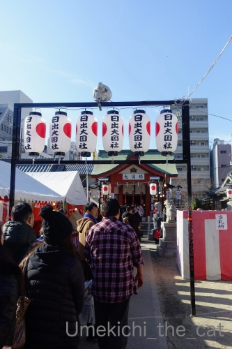

窓の外に見えるもの [梅吉]

梅吉さんが真剣に見つめているのは
カラスさん。
クリアボールでくつろぐ梅吉の視界に入ってきます。

どうにもからかわれている感じがしてなりません(⌒-⌒;

からかわれているにしても大切なコミュニケーションを取っているにしても
明るい時間カラスさんが飛び回るのを見つめるのは良いのですが・・・・・

夜にも窓の外をチェックするのはや〜め〜て〜(꒦ິ⌑꒦ີ)
人や車はもちろん真っ暗だしカラスさんももういません。
一体何を見つめているのー！！
部屋の隅をじっとみられるのも嫌ですが外を見られるのも嫌ですw
大阪七福神めぐり、中編です。
アウェーな地域をとっとと抜けて日本橋付近でランチ。
インドビールで乾杯。
厨房からヒンズー語のやりとりが聞こえてくる「Singh's Kitchen」。
私はバターチキンとラムカレーの２種あいがけ。
おっとはおまかせ４種のまぜまぜカレー。
豚足やミミガーなんて入ったカレー、初めて食べました！
美味しかったのですが豚足は骨がごろごろが入ってて食べにくかった(ｰ ｰ;)
次にお参りしたのが大乗坊。毘沙門天を祀ります。
大乗坊、もともと天王寺（地名です）にあった宝満寺の子院だったのですが
本坊が廃寺になりこの坊だけが難波に移されたようです。
その後さらなる移転、空襲で全焼などの出来事を経て現在の姿になった模様。
現在の立地は関西のオタクの聖地「オタロード」のど真ん中w
辺りのお店にはガチャがたくさんあるので毎年「梅吉の被り物はないかな？」と
チェックするのですが・・・
美少女フィギュア系のものばっかりで「・・・・・」となるのがお約束(⌒-⌒;
でも見ちゃうw
メイドさんが客引きしてたりして良い社会勉強にもなるのよねー！！
おばちゃん気になってやっぱり見ちゃうw

次に向かったのは敷津松之宮。
大国主神社や木津の大国さんという呼び方が一般的なのですが
正式名称は敷津松之宮です。
同じ敷地内、敷津松之宮の西側90度の位置に大国主神社があり
ここが七福神の「大黒天（大黒さん）」となっています。
それぞれの宮に鳥居があるので参道が十字にクロスするあまり見ないスタイル？
写真に写っているのは大国主神社です。
以下、くどくどと覚え書き的説明文が続くので興味のない方はすっ飛ばしてください！
先日Bossさんがご自身のブログのコメントでも触れていらしたのですが・・・
大国主と大黒天は正確には違う神様です。
ざっくり言うと、
大黒天はマハーカーラ（シヴァ神の異名でもあるよ＾＾）というヒンズー教の神様が元になっています。
それがチベット密教を経て中国仏教に取り入れられ日本に伝わり
真言宗や天台宗で信仰されるようになり「財福の神」という性質が強調され民間に広まります。
先の記事で「長寿であった竹内宿禰が寿老人と同一視された」と書いたのですが
ここでも皆様ご存知国づくりの神大国主「大国」とインド由来の「大黒」が
同じ「だいこく」と読めることから同一視され
（この場合は習合といったほうがしっくりくるのですが）
現在のような祀られ方になっているようです。
この同一視が自然にそうなっていったのか、意図的にそうされたのかは良くわかりません。
とある地域の神が他宗教の神と同一視される（させる）のは日本だけに見られることではありません。
（習合のリンク先にも例があり）
ヨーロッパではキリストの肖像はゼウス像に似せて書かれたと言う一説もあり。
古くから馴染みのあるものに似せて（当時は）新興の宗教であったキリスト教を
受け入れやすくしたのではなんて言われています。
この場合は「宗教による人心掌握」なんて政治的なニオイがプンプンしますけど。
（以下さらなる覚書）
敷津松之宮の創建は西暦200年頃ととても古い。
神功皇后一行が住吉大社を創建したのちこの地を通りかかり
海の荒れるこの地域を鎮めるため素戔嗚尊を祀ったのが敷津松之宮と伝えられている。
平安時代の神仏習合思想により祭神を牛頭天王に変更。
明治期に神仏分離政策が施行されると再度素戔嗚尊を祭神と祀ったという経緯がある。
大国主神社が創建されたのは江戸時代（1744年）。
この時期には大国主と大黒天はすでに習合されていたと思われる。
くどくど説明終わりますm(_ _)m
で、この日は十日戎「えべっさん」の最終日「のこり福」の日だったので
神社にはたくさんの参拝の人々が。
関西の方はそれぞれの位置関係で
西の「だいこくさん」＝大国主神社
東の「えべっさん」＝今宮戎神社
と呼び合わせてお参りするのがお作法なんだとか。
次は人ごみでえらいこっちゃになっていそうな今宮戎神社へ向かいます。
またまた長くなったので続きますw

カフェオレ色の梅吉

梅吉 2023年8月10日 永眠


梅吉と出会った譲渡会

犬猫の理由なき殺処分ゼロ
妄想広告
UMEKICHI 光

爆発的に早い！
時々攻撃的！
Thanks to Mr.Boss365
爆発的に早い！
時々攻撃的！
Thanks to Mr.Boss365

梅吉さんには暗くても外は見えるでしょう。
カラスも夜でも飛んでますしね。
by zombiekong (2020-01-23 00:08)
ニャンコは夜行性？だから夜の景色も見えるのかも？
by 英ちゃん (2020-01-23 00:55)
梅吉さんの横顔哲学的で素敵です。
真っ暗な中を見ていたり、部屋の隅をじっと見たり、怖そ〜う（笑）
梅吉さん、暗くてもよく見えそうですね。
by kiki (2020-01-23 01:00)
梅吉君、カラスがきになっちゃうんですね
窓の外に興味の対象があるのは楽しいだろうな
我が家だと窓の外はベランダと隣家の壁しかみえないので
目下の興味はメダカのようです（＾＾；）
by 藤並 香衣 (2020-01-23 01:16)
何が見えるの梅吉さんと思ったらカラス・・・
ガラスの向こうにカラスとか思ってたりして(笑)
梅吉さんは立派な自宅警備員なのです☆
インドのビールも珍しいのですが気になったのはグラスで、
マハラジャ？の印字にちょっと欲しくなりました。
オタロードのメイドさんは私もチラ見します(=_=)
by yamatonosuke (2020-01-23 01:32)
こんにちは。
いきなりナイスショットですね。
逆光黒ベタの梅吉君シルエットが良い感じです。
梅吉君？カラスさんに遊ばれている感じみたいですね。
夜のカーテン、隙間からチェックは・・・
多分、張り込みのですね？（笑）梅しごと・デカ（刑事）梅吉君の誕生です。
インドビール？飲んだ記憶がない。
「豚足とかミミガー」両方共にコラーゲンあり、お肌ツルツルですね（笑）
「メイドさんが客引き・・・」東京だと秋葉原な感じです。
大黒さん・大国主命・大黒天・・諸説あるので紛らわしい感じです。
「政治的なニオイがプンプン」は時の統治者が書き直している可能性はありです。
覚書、読めない文字もありますが・・・
住吉大社も時代の変化で「祭神」が変貌したみたいですね。
日本史、もう少し勉強しておけば良かったと思う今日この頃です！？(=^･ｪ･^=)
PS。ダウンヒラー川端絵美さんにはウケました（爆）後継者いないのが残念。
３歳のスキーデビューのちぃさんに継承して欲しかったです。
by Boss365 (2020-01-23 02:13)
うちの庭にもカラスが来るようになって
ニャンが注視してる時があります。
近づいたらめっちゃ大きいし
襲われる危険もあるのに＾＾；
by ぽちの輔 (2020-01-23 05:53)
そうそう、カラスって家猫で遊びますよねぇ(;^ω^)
うちの出窓外の電線にも時々止まってわざと鳴いて注目を集めて・・・
そしてうちのにゃんずがまんまと狙いますｗ
いや、どう見てもカラスサイズって獲物ではないから(;^ω^)
夜窓の外を見つめる梅吉さんは、きっと自宅警備に励んでるんですよぉ(*'▽')
by ニッキー (2020-01-23 07:14)
実家のミイちゃんは昼間は窓辺に座り込んで外ながめてますが、夜はやらないかなー。でも、「おんも行く――！」は昼間も夜も続きます(笑) 以前は、夜は「外は暗いでしょ！」って出さなかったのですが、最近は、昼間が留守番だった時などは、夜でも出してあげているそうです。しかし暗闇にリード付けて座り込んでいる猫の図はちょっと変です。
梅吉さんのカーテンから外を覗き見る哀愁ある背中、いいわぁ。
こういう後ろ姿見ると、背後から、「なになに？」って一緒に外を見たくなっちゃう。
七福神めぐり、ついでに美味しいランチに社会勉強となかなか盛りだくさんになってますねー。
by ChatBleu (2020-01-23 07:29)
昼も夜も欠かさずに監視しないとですね(#^.^#)
お家を守ってくれている梅吉さんです！
by きぃ (2020-01-23 08:59)
梅吉さんは何を見ているのでしょう？
人に見えない物が見えるのかな(^^)
そう言えば先日千駄ヶ谷にある鳩の森八幡宮に行ったら大行列で参拝に4時間待ちと言っていました。
島田秀平が2020年最強のパワースポットとテレビで紹介していたのが影響しているみたいです。
参拝諦めて境内を少し撮影しました、パワースポットに行っただけでも良いと思いました(^^)
by ma2ma2 (2020-01-23 10:04)
レコードプレーヤの上にしっかりブランケットが敷いてある！
梅吉さんが乗る前提なのが下僕度高し、ウチのプリンタと同じです^^
カーテンの隙間からこっそりのぞく後ろ姿も大好物♪
何見てんの～？と一緒に顔を突っ込んでみるのですが、何かいた試しはありません。くわばらくわばら・・。
日本橋は電気店街だった頃には安い家電を探しに行きましたが、メイドカフェは未体験ゾーンです！
大国主神社・・もしかして地下鉄の「大国町」駅の名前の由来！？
そんなことも知らないダメダメ大阪人でございます<(_ _)>
by ゆきち (2020-01-23 12:35)
ありますよねー(￣∇￣；
真っ暗な外をじぃっと見つめていること...
ニャンズには見えるのでしょうが、気になりますよねｗｗ
オタロードってどのあたりなんだろう？？
日本橋付近でしょうか？ほぼ行かないのでわかっていない私＾＾
そういえば、『大阪カレー』なるジャンルがあるくらい
大阪のカレー界はアツいそうです♪
カレー屋さんも多いですよね。
by カトリーヌ (2020-01-23 13:06)
夜は車のライトやランニングしている人を見ているんでしょうか？
梅吉さんが外を覗いている窓を逆に外から見てみたいですね(^_^;)
by kou (2020-01-23 19:46)
我が家のチビは朝、ニャーニャー鳴いてうるさいので私の部屋に入れると、窓際に一目散に登ります。
外の景色をじっと観察して、また去っていきます。
このところ、毎朝の日課になっています＾＾
by riverwalk (2020-01-23 20:02)
梅吉さんの目には夜でも何かが見えているのかな？^^;
あ、でも、夜烏（ゴイサギという野鳥）が飛んでいる可能性もあります。
カレーは好きですが、豚足＆ミミガー入りは食べられません。。。
覚書、難しすぎて私には内容が把握できませんー。^^;
by yes_hama (2020-01-23 22:23)
ちぃさん夫妻、そして、先生！
今年もガブっと行きまっせ！^ ^
by 小松達也 (2020-01-24 13:12)
梅吉さん、すっぽりはまりつつ熱心に見ている横顔、可愛い～^^
カラスは頭いいから～ほんとにからかってるかもね。
「あ～ほ～」って意味わかって鳴いてるように聞こえることもあるし^^;
にゃんこは夜もかなり目が見えるし、風で枝が動くとか、通る車の音がしてライトが光るとかもあるんじゃないかな？^^
by sana (2020-01-24 20:04)
カラスさんと遊びたいのかな^^
by ニコニコファイト (2020-01-25 07:05)
参道が十字にクロスって、たしかに珍しいよね。
訪れてみたい^^
梅吉くん、見てますねーーーｗｗ
たしかに夜見るのは止めて〜〜
ガラスにうつった自分に見惚れてるとか？(笑)
弁財天ももともとはヒンドゥー教の神さまだし^^
明治時代の神仏分離、これがいろいろ弊害を生んでるよね！
by リュカ (2020-01-25 11:49)
こんにちは。
こびきうどんの「こびき」は「小引き」で手延素麺を作る過程の工程。
乾燥→小引き→乾燥→小引き→を繰り返して極細の素麺にしてゆくみたいです。
多分？昔は、途中過程で失敗した素麺が・・・
「もったいない精神」で「うどん」として食べられたと推測？
現在は独立した商品として「小引きうどん」して売られているみたい。
曖昧ですが？ご理解下さい！？(=^･ｪ･^=)
by Boss365 (2020-01-26 17:00)